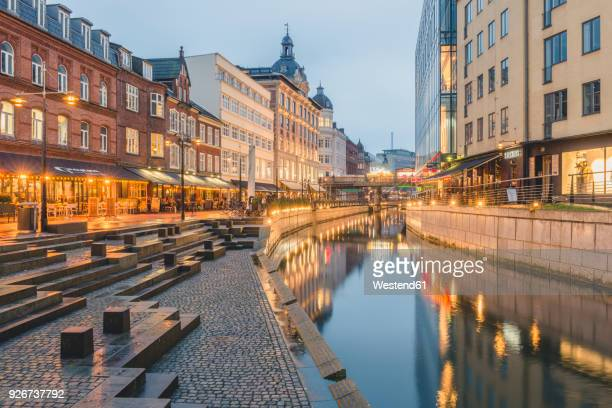

About Denmark
Denmark, a picturesque Nordic country located in Northern Europe, is renowned for its captivating blend of historic charm, modern innovation, and high quality of life. The country offers a rich cultural heritage, stunning landscapes, and a unique sense of coziness known as "hygge."
Denmark boasts a collection of remarkable landmarks that reflect its history and cultural identity. One of the most iconic landmarks is the historic Tivoli Gardens in Copenhagen. Founded in 1843, Tivoli is one of the world's oldest amusement parks and offers a magical atmosphere with its charming gardens, thrilling rides, and live entertainment.
Roskilde Cathedral, a UNESCO World Heritage Site, is a masterpiece of Gothic architecture and a significant part of Danish history. Dating back to the 12th century, the cathedral houses the tombs of Danish monarchs and is known for its stunning architecture and intricate decorations.
For those interested in modern design and architecture, Denmark's capital city, Copenhagen, is a treasure trove. The Royal Danish Playhouse, designed by Danish architect Lundgaard & Tranberg, is a contemporary architectural marvel located along the city's waterfront.
Whether you're exploring historic sites, indulging in world-class cuisine, or experiencing the warmth of Danish hospitality, Denmark offers a diverse range of experiences that cater to every traveler's interests.
Popular Destinations
Denmark is a country known for its rich history, picturesque landscapes, and vibrant cities. Here are some popular destinations to explore:
Copenhagen
The capital city, Copenhagen, is a vibrant blend of history and modernity. Visit the iconic Little Mermaid statue, explore the historic Tivoli Gardens amusement park, and take a stroll along the colorful Nyhavn waterfront. The city also boasts impressive cultural attractions like the National Museum, the Round Tower, and the modern architectural marvel, the Royal Danish Playhouse.

Aarhus
Aarhus is Denmark's second-largest city and is known for its youthful energy and cultural scene. The ARoS Aarhus Art Museum is a must-visit, with its contemporary art exhibitions and the famous "Your Rainbow Panorama" atop the museum offering panoramic views of the city. The Den Gamle By open-air museum provides a glimpse into Denmark's past, showcasing historic buildings and recreations of life from different eras.

Roskilde
Roskilde is famous for its stunning cathedral, a UNESCO World Heritage site. The Roskilde Cathedral houses the tombs of many Danish monarchs and offers fascinating insights into the country's history. The Viking Ship Museum in Roskilde showcases well-preserved Viking ships and provides insights into Denmark's seafaring past.

Skagen
Skagen is a charming coastal town located at the northern tip of Denmark's Jutland peninsula. The unique location where the North Sea and the Baltic Sea meet has inspired generations of artists. Visit the Skagens Museum to see works by the Skagen Painters, who were known for capturing the town's natural beauty and unique light.

Legoland Billund
For families and LEGO enthusiasts, Legoland Billund is a must-visit destination. This popular theme park features intricate LEGO-built landscapes, rides, and attractions that entertain both children and adults alike.

Egeskov Castle
Egeskov Castle, located on the island of Funen, is one of Europe's best-preserved Renaissance water castles. The castle's beautiful gardens, intricate architecture, and numerous museums make it a captivating destination for history and architecture enthusiasts.

Bornholm
Bornholm is a Danish island in the Baltic Sea known for its stunning landscapes, historic towns, and unique round churches. The island offers opportunities for hiking, biking, and exploring charming villages, along with enjoying the local arts and crafts scene.
Århus
Århus, often referred to as Aarhus, is Denmark's second-largest city and offers a mix of cultural attractions, historic sites, and a lively atmosphere. Explore the open-air Old Town museum, visit the Moesgaard Museum to learn about Danish history, and enjoy the city's numerous cafes, shops, and galleries.
North Zealand
North Zealand, just north of Copenhagen, is known for its picturesque landscapes and historic sites. Visit the Kronborg Castle, the setting for Shakespeare's "Hamlet," and the nearby Fredensborg Palace, which is still used by the Danish royal family for official events.

Activities in Denmark
Denmark, a country known for its rich history, stunning landscapes, and modern cities, offers a wide array of activities to suit every traveler's interests:
Cultural Delights
Denmark boasts a deep-rooted cultural heritage that spans from its Viking history to its contemporary design and architecture. Explore historic castles, charming villages, and bustling cities where museums and galleries showcase the nation's artistic and historical treasures. Danish culture places a strong emphasis on coziness, known as "hygge," which you can experience by sipping hot beverages at local cafes or enjoying leisurely strolls along cobblestone streets.

Natural Wonders
The Danish countryside offers serene natural beauty that ranges from rolling farmlands to picturesque coastlines. Explore the expansive beaches along the North Sea and Baltic Sea, where you can take leisurely walks, fly kites, or enjoy beachside picnics. Denmark is also home to lush forests, tranquil lakes, and iconic windmills that contribute to its idyllic landscapes.

Culinary Adventures
Danish cuisine combines traditional flavors with modern twists, offering a variety of delectable dishes. Indulge in open-faced sandwiches ("smørrebrød"), freshly caught seafood, and iconic pastries like "Danish" pastries. The food scene is complemented by cozy eateries, Michelin-starred restaurants, and lively food markets that showcase the country's commitment to culinary excellence.

Biking and Outdoor Exploration
Denmark is a cyclist's paradise, with a well-developed network of cycling paths that wind through both urban centers and rural landscapes. Rent a bike to explore charming villages, rolling hills, and serene coastal routes. Additionally, the country offers opportunities for hiking, sailing, and kayaking, allowing you to immerse yourself in its natural beauty.

Royal Experiences
Experience Denmark's royal heritage by visiting the stunning palaces and castles that dot the landscape. From the historic Kronborg Castle, famously known as Elsinore in Shakespeare's "Hamlet," to the lavish Amalienborg Palace in Copenhagen, you can witness the grandeur of Danish royalty while learning about the country's history.

Modern Urban Vibes
Explore Denmark's vibrant cities, including the capital city of Copenhagen. Discover cutting-edge design, contemporary art galleries, and a lively culinary scene. Don't miss the iconic Little Mermaid statue, the colorful Nyhavn waterfront, and the innovative architecture of the Royal Danish Opera House.

Whether you're drawn to cultural exploration, outdoor adventures, or city escapades, Denmark offers a diverse range of activities that will leave you with unforgettable memories.
Resources for Visiting Denmark
Planning a trip to Denmark? Here are some useful resources and tips to ensure you have a memorable and enjoyable experience:
Travel Guides
Explore travel guides that offer insights into Denmark's top attractions, local experiences, transportation options, and more. Websites like VisitDenmark and Lonely Planet provide valuable information to help you make the most of your trip.
Language
While English is widely spoken in Denmark, learning a few basic Danish phrases can enhance your cultural experience. Language learning apps like Duolingo or Babbel can help you grasp simple greetings and expressions.
Transportation
Navigate Denmark's efficient transportation system by researching options such as trains, buses, and ferries. Consider purchasing a Copenhagen Card for convenient access to public transportation and popular attractions.
Accommodation
Choose from a range of accommodations, including boutique hotels, cozy bed and breakfasts, and modern hostels. Booking platforms like Hotels.com, Airbnb, and Expedia offer diverse lodging options to suit your preferences and budget.
Currency and Payments
The official currency of Denmark is the Danish Krone (DKK). Credit and debit cards are widely accepted, but it's a good idea to have some cash on hand for smaller purchases, especially in rural areas.
Local Cuisine
Indulge in the flavors of Danish cuisine, known for its emphasis on fresh, local ingredients. Try traditional dishes like "smørrebrød" (open-faced sandwiches), "frikadeller" (meatballs), and various seafood options. Don't forget to experience the joy of Danish pastries!
Safety and Health
Denmark is considered safe for travelers. Make sure you have travel insurance that covers medical expenses. Denmark has a high standard of healthcare facilities, so you can travel with peace of mind.
Cultural Etiquette
Show respect for Danish customs by observing local norms, such as punctuality and personal space. When visiting churches or historic sites, dress modestly. Be aware that "hygge" is a central aspect of Danish culture—embrace the coziness and warm atmosphere it entails.
Sightseeing and Activities
Explore Denmark's rich history by visiting castles, museums, and Viking sites. Enjoy the scenic beauty of the Danish countryside and coastline. Consider renting a bike to experience the country like a local, and don't miss out on the vibrant cultural scene in cities like Copenhagen and Aarhus.
Before your trip, check the latest travel advisories and entry requirements for Denmark. By using these resources and planning ahead, you can have a fantastic and enriching experience in this charming Scandinavian country.